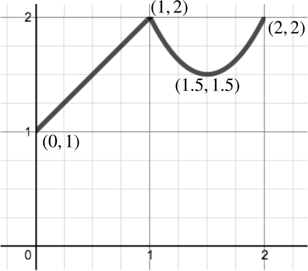

Let f(x)={x+12x2−6x+6for 0≤x≤1;for 1≤x≤2.
- Sketch a graph of y=f(x) for 0≤x≤2, labelling any turning points and the values attained at x=0, 1, 2.
There is no turning point in the interval 0≤x≤1. To find any turning points in the interval 1≤x≤2, we first differentiate f(x) in this interval to get f′(x)=4x−6.
Setting f′(x)=0 gives x=32, so there is just one turning point, at (32,32).
We also have f(0)=1;f(1)=2;f(2)=2.

We could alternatively find the turning point for the quadratic section by completing the square. We have 2x2−6x+6=2(x−3/2)2+3/2.
- For 1≤t≤2, define
g(t)=∫tt−1f(x)dx.
Express g(t) as a cubic in t.
As
0≤t−1≤1≤t, we can split the integral at
x=1. We have
g(t)=∫1t−1x+1dx+∫t12x2−6x+6dx=[x22+x]1t−1+[2x33−3x2+6x]t1=2t33−7t22+6t−53.
Note ∫1t−1x+1dx=[x22+x]1t−1=[(x+1)22]1t−1.
- Calculate and factorise g′(t).
We have
g′(t)=2t2−7t+6=(2t−3)(t−2).
- What are the minimum and maximum values of g(t) for t in the range 1≤t≤2?
The minimum and maximum values will occur either at the end points (t=1 or t=2) or at the turning points.
The turning points occur when g′(t)=0, which is when t=32 or t=2.
We have
g(1)g(32)g(2)=32=3624;=4124;=53=4024.
So the maximum occurs at t=32 with value 4124, and the minimum is at t=1 with value 32.